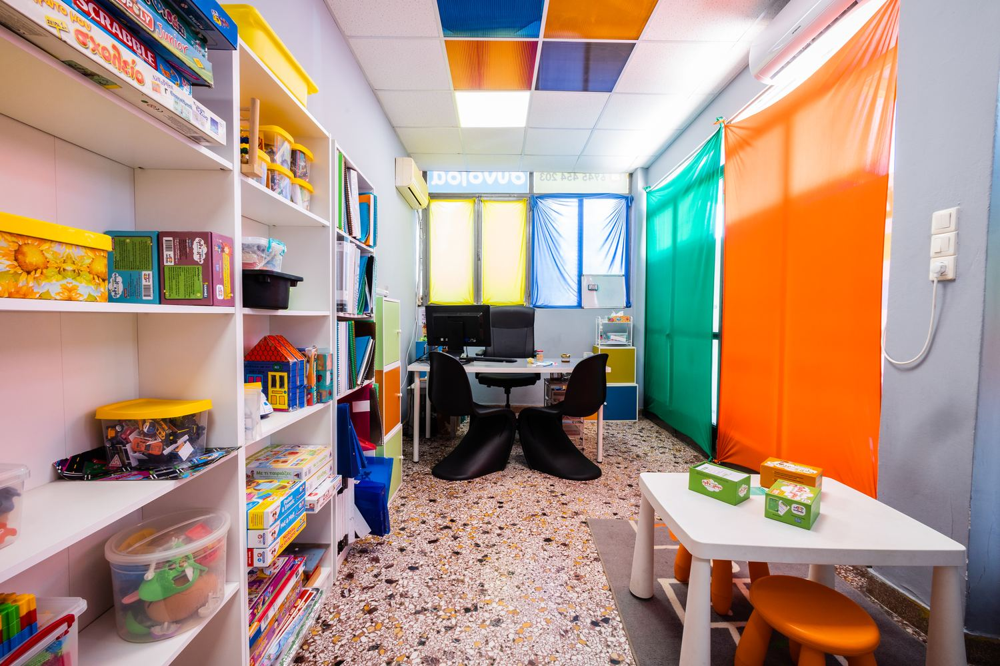
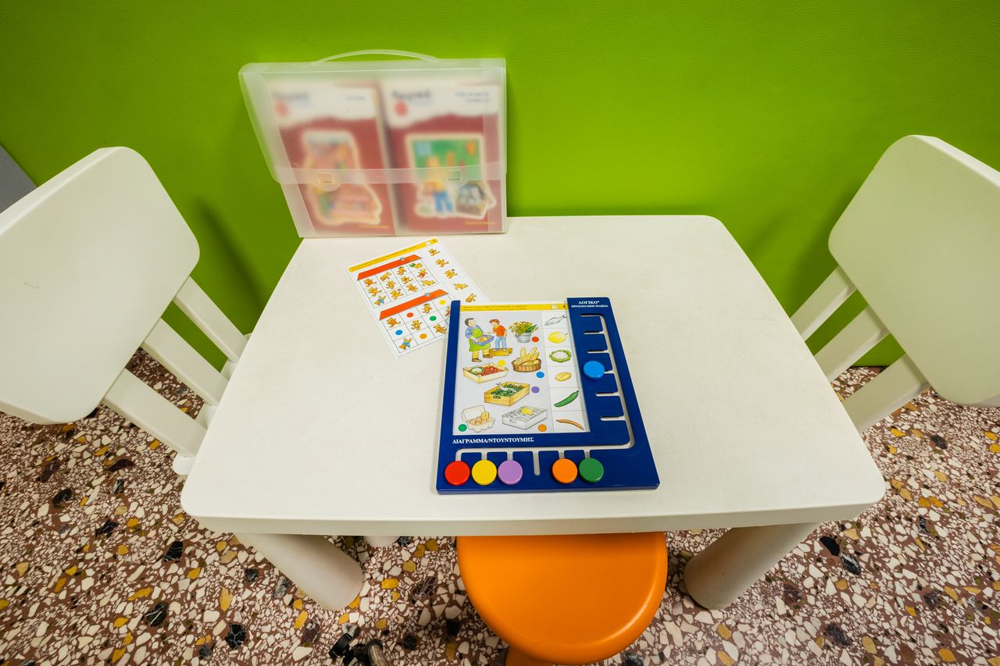

Θεραπείες
Ειδική Αγωγή

Η προσέγγισή μας
Βοηθάμε κάθε παιδί να μάθει με τον δικό του τρόπο.
Η ειδική αγωγή απευθύνεται σε παιδιά με ειδικές μαθησιακές δυσκολίες (δυσλεξία, δυσορθογραφία, δυσαριθμησία) και άλλες δυσκολίες μάθησης. Η παρέμβαση είναι δομημένη, ρητή και συστηματική: κάθε νέα δεξιότητα διδάσκεται βήμα-βήμα, χτίζει πάνω στην προηγούμενη και επανεξετάζεται συχνά, ώστε να εδραιώνεται. Ο ειδικός παιδαγωγός αξιολογεί πώς μαθαίνει το κάθε παιδί και προσαρμόζει τη διδασκαλία στις ανάγκες του, σε συνεργασία με την οικογένεια και το σχολείο.
Για τους γονείς
Πότε να απευθυνθείτε σε ειδικό παιδαγωγό;
- Δυσκολεύεται στην ανάγνωση: αργός ρυθμός, συλλαβιστά, χάνει τη σειρά, μαντεύει λέξεις.
- Κάνει επίμονα ορθογραφικά λάθη, παρά την εξάσκηση.
- Αποφεύγει το διάβασμα ή τη γραφή, ή τα ολοκληρώνει με μεγάλη κούραση.
- Δυσκολεύεται στα μαθηματικά: πράξεις, προπαίδεια, προβλήματα.
- Δυσκολεύεται να συγκρατήσει οδηγίες και νέες πληροφορίες.
- Η σχολική του επίδοση δεν ανταποκρίνεται στην προσπάθεια που καταβάλλει.
Κάθε παιδί αναπτύσσεται με τον δικό του ρυθμό. Αν αναγνωρίζετε κάποια από τα παραπάνω, μια αξιολόγηση μπορεί είτε να σας καθησυχάσει είτε να δώσει έγκαιρη κατεύθυνση. Παρακάτω θα βρείτε τους άξονες στους οποίους αξιολογούμε και παρεμβαίνουμε.
Τομείς παρέμβασης
Οι βασικοί άξονες της μαθησιακής παρέμβασης
- Οργάνωση της σκέψης: σε προφορικό και γραπτό επίπεδο, με ενίσχυση του ειρμού · ανάπτυξη λογικής και κριτικής ικανότητας · επιχειρηματολογία · βελτίωση της ακουστικής προσοχής · εμπλουτισμό προτάσεων · οργάνωση κειμένου με τήρηση πλάνου
- Αναγνωστική ικανότητα: αποκωδικοποίηση · κατανόηση · ρυθμός · προσωδία
- Γραφή και ορθογραφία: γραπτή έκφραση · θεματική και καταληκτική ορθογραφία · δομή πρότασης και παραγράφου
- Μαθηματική σκέψη: ταξινόμηση · σειροθέτηση · διατήρηση · μέτρηση και απαρίθμηση · γραφή και ανάγνωση αριθμών και αριθμητικών συμβόλων · θεσιακή αξία ψηφίου · εκτέλεση πράξεων οριζόντια και κάθετα · επαλήθευση · κατανόηση και επίλυση προβλημάτων · γεωμετρικές έννοιες
- Μνήμη: εργαζόμενη · βραχύχρονη (οπτική, ακουστική, φωνολογική) · μακρόχρονη · μνημοτεχνικές που βοηθούν το παιδί να απομνημονεύει ευκολότερα τις πληροφορίες
Ψυχογνωστικές δεξιότητες
Στόχοι που χτίζουν τα εργαλεία της μάθησης
Επιπρόσθετα, στόχο αποτελεί η ανάπτυξη όλων των ψυχογνωστικών δεξιοτήτων και η κατανόηση του τρόπου με τον οποίο σκέφτεται και μαθαίνει το κάθε παιδί.
- Μεταγνωστικές στρατηγικές: στοχοθεσία · κριτήρια κρίσης της συμπεριφοράς επίτευξης · αυτοπαρακολούθηση · αυτορρύθμιση · στρατηγική αναζήτησης βοήθειας · διαχείριση αποτυχίας
- Κίνητρο και ενεργητική μάθηση: ανάδυση κινήτρου · ανάπτυξη εσωτερικών κινήτρων · ενεργοποίηση του ενδιαφέροντος για ενεργητική μάθηση
- Αυτοεκτίμηση και ανοχή στη ματαίωση: ενίσχυση της αυτοπεποίθησης του παιδιού απέναντι στη μάθηση και της επιμονής στην προσπάθεια